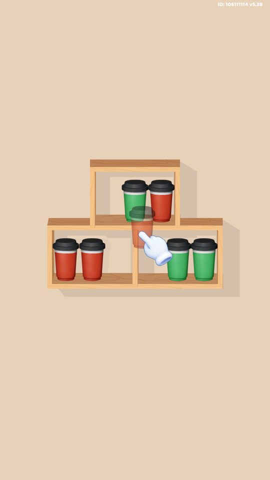
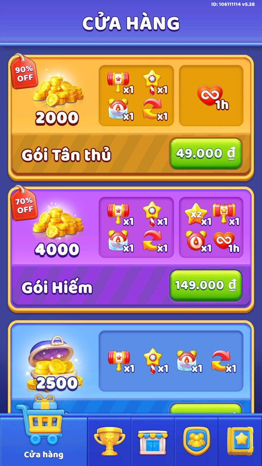
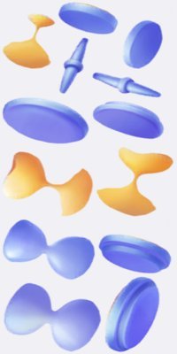
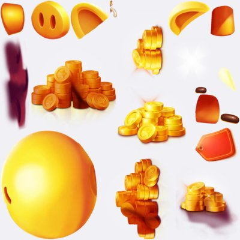
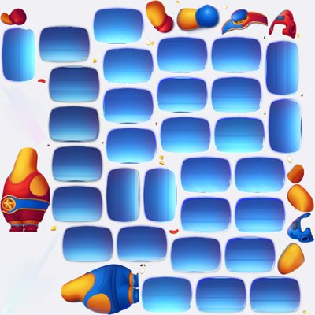
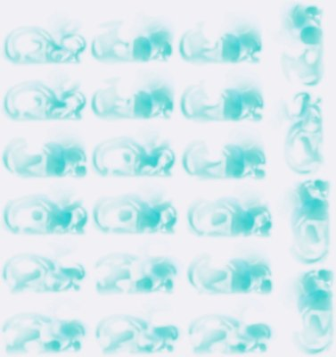
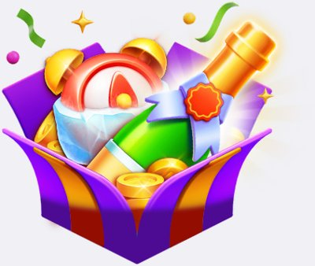

Goods Sort — Triple Master: Phân tích sale & event (bản cơ bản)
com.fc.goods.sort.matching.puzzle.triplemaster v5.38, Unity 6000.0.78f1 IL2CPP. Tài liệu này mô tả dòng chảy tiền tệ, vòng lặp một màn, các lớp bán hàng và các nhóm sự kiện theo đúng logic đọc được trong code đã dịch ngược. Mọi số liệu đều dẫn chứng tên class.method / key thật. Giá trị do SERVER cấp (các *Sheet nạp qua ClientClassConverter từ get-config, kiểu EncryptedInt) được ghi rõ "do server" — không bịa số.---
Bối cảnh & nguồn dữ liệu
Goods Sort là game sort hàng hoá 3D (match-3 trên kệ có giới hạn thời gian, ô khoá, lớp ẩn). Khoảng 4.500 màn đầu được baked thành asset SOLevel nạp qua Addressables; màn vượt mức baked được server stream về (UpdateLevelFromServerController.OnGetLevel, file Level {n}.txt nén GZip+Base64). Tiến trình màn là server-authoritative (level_en + max_level_server mã hoá) nên không spoof lên cao được trên máy — vì vậy phần lớn event (mở ở màn 15–50) chỉ mô tả từ code, không có ảnh chụp live; đó là bình thường.
Tài liệu dựa trên các nguồn:
| Nguồn | Nội dung |
|---|---|
gdd/*.json | 60+ hồ sơ feature đã viết (use case + config có evidence) |
facts/config/remoteconfig_defaults.tsv | 104 giá trị mặc định .ctor của RemoteConfig (unlock level, ad, kinh tế) |
facts/capture-notes.md | Ghi chú buổi chụp (giá IAP VND thật, phân khúc chi tiêu) |
facts/naming.json, facts/loc/terms.json | Map code → tên EN/VI |
PseudoC/Assembly-CSharp/*.c | Thân hàm (số liệu/logic chính xác) |


---
1. Kinh tế lõi trong một trang
Mọi tài nguyên người chơi đi qua một điểm trao thưởng tập trung là ResourceController.AddResource(ResourceValue...): nó đọc ResourceType của phần thưởng rồi định tuyến về đúng kho (UserResourceController cho Tim/Vàng/Sao, BoosterDataController/PowerUpDataController cho vật phẩm, các controller sự kiện cho token). Mỗi lần cộng/trừ đều ghi funnel_log kèm item_type/item_id/purpose/where để phân tích nguồn–ngốn (source/sink). enum ResourceType có 42 giá trị (Heart=0, Gold=1, Star=2, ... LTV=41).
1.1. Ba loại tài nguyên
| Tài nguyên | Vai trò | Khởi tạo | Trần | Evidence |
|---|---|---|---|---|
| Tim (heart) | Mạng để vào màn (−1 khi thua) | DefaultHeart = 5 | 5 (8 khi mua Master Pass premium) | UserResourceController.GetMaxHeart; MasterPassController.IsBuyPremium |
| Vàng (gold) | Tiền tệ chính: mua vật phẩm/tim, mở ô khoá, tạo đội | goldInit = 1000 | — | remoteconfig_defaults.tsv:goldInit; UserResourceController.AddGold |
| Sao (star) | Tài nguyên "đua": kiếm khi thắng, nạp vào event | — | — | UserResourceController.AddStar; ResourceType.Star=2 |
Cả ba lưu chung trong khối save resource (class UserResource, kiểu ObscuredInt chống hack), server đồng bộ qua UserResourceController.UpdateDataFromServer(UserResourceServer).
1.2. Hồi tim 30 phút
Tim tự hồi bằng coroutine CoroutineUpdateHeart (tick mỗi waitForSeconds = 1.0 giây) + CheckAndUpdateHeart(): cứ đủ NUM_SECOND_TO_INCREASE_HEART = 1800 giây (30 phút) thì cộng get_NumHeartRestorePerLoop = 1 tim, dừng khi chạm GetMaxHeart. Tim vô hạn (AddInfiHeart/AddInfiTime, ví dụ gói IAP Starter tặng 1 giờ) cho chơi không tốn tim trong khi IsInfiHeart() còn đúng.
1.3. Nguồn (source) và ngốn (sink)
Vàng — nguồn:
| Nguồn | Số | Evidence / ghi chú |
|---|---|---|
| Xem quảng cáo trong cửa hàng | +80 / 5 phút | ShopGoldController.WatchAdsToClaimGold; GOLD_CLAIM_BY_ADS = 80 (0x50), TIME_TO_WATCH_NEXT_ADS = 300 |
| Ad break (quảng cáo xen) | +2 | remoteconfig_defaults.tsv:goldAdBreak = 2 |
| Mua gói vàng IAP | gold_1..gold_6 | Số vàng do server (ShopGoldSheet.gold EncryptedInt); giá VND quan sát: 1000=49k … 65000=1.750.000đ |
| Gói "1 đô" khi thua | +800 | ShopGoldController.GetGoldInPurchasePack(-1) |
| Mua gói Bỏ quảng cáo | +800 | NoAds: GOLD_WHEN_PURCHASE = 800 |
| Heo vàng, Daily Quest chest, Building, event | do server | PiggyBankSheet, DailyQuestController.GetResourceChest, BuildingRewardByDaySheet… |
Vàng — ngốn (sink):
| Ngốn | Số | Evidence |
|---|---|---|
| Mua đầy tim | 800 | GOLD_TO_BUY_HEART = 800 (UserResourceController..ctor) |
| Mua 1 booster | 800 | GOLD_TO_BUY_BOOSTER = 800 (BoosterDataController..cctor) |
| Mở 1 ô khoá | 1000 | goldToUnlockCellLock = 1000 |
| Tạo đội (Team) | 100 | goldToCreateTeam = 100 |
| Chơi thêm / revive Pick A Prize | do server | PickAPrizeEntryFeeSheet, PickAPrizeRevivalCostSheet |
Tim: nguồn = hồi 30 phút, mua 800 vàng (BuyHeart), xem ads (WatchAds_FreeHearth), đồng đội tặng (GetFreeLive/ReceiveFreeLive qua SCReceiveFreeLive), gói vô hạn; ngốn = MinusHeart(1) mỗi lần thua.
Sao: nguồn = thắng màn GetStarBonusByTime = floor(timeToPlayRemain / 10) (nhân đôi nếu ResourceController.IsX2Reward); ngốn = nạp vào các event đua/rương (Star Rush AddStar, Luxury Chest gom sao mở rương).


1.4. Booster vs Power-up (vật phẩm trong màn)
| Loại | Dùng khi | Danh sách | Evidence |
|---|---|---|---|
| Booster (pre-level, chọn trước, tự kích hoạt đầu màn) | Trước khi vào màn | Super Hammer (hoàn thành 4 match), Bonus Timer (AddTime(60)), Star Doubler (x2 Sao) | enum BoosterKind {BreakItem=0, IncreaseTime=1, X2_Star=2}; mở ở màn 4/6/8 (GetLevelUnLockBooster = kind*2+4) |
| Power-up (in-game, dùng ngay khi chơi) | Trong màn | Hammer (1 match), Time Freeze (GetTimeFreeze = 15s), Magic Wand (9 ô → 3 match), Refresh/Swap (xáo bàn) | enum PowerupKind {BreakItem=0, Freeze=1, Swap=2, Replace=3}; mở ở màn 2/9/4/6 (GetLevelUnLockPowerup) |
Người chơi mới nhận numBoosterInit = 1 và numPowerupInit = 1 mỗi loại. Hết thì mua 800 vàng hoặc xem quảng cáo (có trần theo màn: numAdsPowerupStuck = 1, numAdsTimeoutPerLevel = 1).
---
2. Vòng lặp một màn chơi
2.1. Luồng chính
GenLevelController.Awake chọn nguồn màn → nạp LevelInfo (SOLevel baked hoặc txt server) → SetupCells dựng từng Cell theo CellInfo (vị trí, số lớp, kiểu di chuyển, có khoá) → LevelController.InitData(cells, time, numLock, cellLocks) đặt _timeToPlayInit = LevelInfo.timeToPlay rồi chuyển LevelState = Playing. Mỗi frame Update gọi CheckState (chu kỳ time_check_win_interval = 1 giây) để kiểm tra thắng / kẹt / hết giờ.
`` Chọn booster (pre-level) → Vào màn (−1 tim nếu thua sau đó) │ ▼ CHƠI: chạm kệ → chuyển hàng top sang kệ cùng loại │ đủ 3 món giống nhau → match-3 (RemoveItemInTopLayer) → lộ lớp dưới ▼ ┌─ THẮNG (IsCompleteLevel): EndGame(Win), sao = floor(time/10) ├─ HẾT GIỜ (CheckTimeOut): EndGame(TimeOut) "Time's Up!" → mời +30s qua ads └─ KẸT (CheckStuck): EndGame(Stuck) "Out of space!" → mời powerup qua ads │ ▼ POPUP KẾT THÚC + chuỗi offer (xem mục 3) ``
2.2. Thắng / thua và phần thưởng theo độ khó
Mỗi màn được gán một trong ba mức enum LevelDifficult {Normal=0, Hard=1, VeryHard=2} qua LevelDataController.GetLevelDifficult. Mức khó không nằm cứng trong màn mà do bảng Level_DifficultSheet.Get(level) (do server) quyết định, cộng vài quy tắc đặc biệt:
- Trong Super League: độ khó theo vị trí trong khối 10 màn —
level%10==9 → VeryHard,level%10==4 → Hard, còn lại Normal. - Màn FTUE 5/6 bị ép theo A/B khi
RemoteConfig.abTestFTUE >= 0(màn 5 → Hard, màn 6 → Normal).
Độ khó ảnh hưởng tới phần thưởng và "van an toàn":
| Ảnh hưởng | Giá trị | Evidence |
|---|---|---|
| Chìa Battle Pass mỗi lần thắng | Normal 1 / Hard 3 / SuperHard 5 | MagicPassService.GetKeyIncreaseCountByLevelDifficulty; BlockPassConfigModel |
| Gem Building mỗi màn | theo độ khó (do server) | BuildingDataController.GetGemFromLevel; BuildingGemRewardByLevelSheet |
| Sao thưởng | floor(timeToPlayRemain / 10), x2 nếu IsX2Reward | LevelController.GetStarBonusByTime |
| Fail-safe (nới khó khi thua nhiều) | từ màn levelApplyFailSafe_1 = 30, số lần thua theo FailSafeSheet.failToActives[difficulty] (do server) | LevelDataController.GetNumFailApplyFailSafe; IsApplyFailSafe |
2.3. Các "buff" trong vòng lặp
- Win Streak (mở màn 12, hoặc 13 nếu
abTestFTUE > 0): mỗi màn thắng tăng chuỗi (tối đamax_streak = 3); vào màn kế được cộng thời gianGetTimeBonus(streak) = streak * 10giây (tối đa +30s). Thua →Lose()reset chuỗi về 0. Evidence:WinStreakDataController.GetTimeBonus,WinStreakData.streak. - Revive / cộng giờ: hết giờ có thể xem ads +
timeAdditionEndgame = 30s (numAdsTimeoutPerLevel = 1); kẹt có thể xem ads nhận powerup (numAdsPowerupStuck = 1). - Quảng cáo: interstitial mở từ màn
levelInterstitial = 6(nhịptimeToShowInterIngame = 120s), banner từlevelBanner = 3, app-open từlevelAppOpen = 3.


---
3. Các lớp bán hàng (sale layers)
Hệ thống bán hàng của Goods Sort gồm nhiều lớp xếp chồng, mỗi lớp nhắm một thời điểm/tâm lý khác nhau. Tất cả các gói sự kiện đều chọn nội dung theo phân khúc chi tiêu (IAPTrackingController.GetSegment/get_ltv → Free / Minnow / Dolphin / Whale) và nạp giá+thưởng từ server (*Sheet EncryptedInt), nên giá trị cụ thể do server — tài liệu chỉ mô tả cơ chế.
3.1. Bản đồ các lớp
| Lớp | Cơ chế | Kích hoạt (trigger) | Controller / evidence |
|---|---|---|---|
| Shop coin | 6 gói vàng + gói thưởng; vàng free qua ads 80/5p; gói "1 đô" | Luôn có; gói 1 đô bật khi thua với vàng ≤ 799 | ShopGoldController; CheckAndActiveOneDollardPackWhenLose |
| Bundle giá trị | gs_big/great/ultra/superior/legendary_bundle | Luôn có trong Shop (biến thể lọc theo RemoteConfig) | ShopBundleController.CheckShopBundleTypeFromRemoteConfig |
| Pass (battle pass) | Master Pass: chìa từ thắng màn, nhánh free + premium | Mở màn 24 | MasterPassController (get_GetLevelUnlock = 0x18) |
| Early Offer | Chuỗi 6 gói bậc chức danh (Trainee → Shop Manager), giá gạch ngang | Người chơi mới, màn 5/6 | EarlyOfferDataController (levelUnlockEarlyOffer = 5, _1 = 6) |
| Prefail Offer | "Sparky's Supply": gói cứu màn TRƯỚC khi thua, leo/hạ bậc | Sắp thua trong màn | PrefailOfferDataController (levelUnlockPrefailOffer = 10) |
| Fail Offer | Gói hồi sinh SAU khi thua; đổi "Best Value" sau 10 lần hiện | Màn revive sau thua | FailOfferDataController (levelUnlockFailOffer = 10) |
| Piggy Bank | Heo tích vàng mỗi màn, đầy thì đập (IAP) với % giảm | Theo phân khúc LTV | PiggyBankController |
| Seasonal / flash sale | Trio-delight / Chop-offer / Choose-your-gift / 1 gói | Theo lễ + khung giờ server | SeasonalOffers, SingleDaySale, ChopOffer… |
| Segment packs | Bảng gói song song Free/Minnow/Dolphin/Whale | Trong shop từng sự kiện | BartenderPack_*Sheet, EnvelopeShop_*Sheet… |
3.2. Shop coin — quầy vàng
ShopGoldController quản lý 6 gói gold_1..gold_6 + gs_gold_bonus_pack; số vàng mỗi gói do server (ShopGoldSheet.gold, giải mã XOR 0x4e908ab). Hai cơ chế "mồi" đáng chú ý:
1. Vàng miễn phí qua ads: WatchAdsToClaimGold() cộng GOLD_CLAIM_BY_ADS = 80 rồi khoá nút TIME_TO_WATCH_NEXT_ADS = 300s. CanGetFreeGold() luôn trả false → không có đường lấy free không-ads. 2. Gói "1 đô": CheckAndActiveOneDollardPackWhenLose() bật gói tặng GetGoldInPurchasePack(-1) = 800 vàng chỉ khi vàng người chơi ≤ 799 — nhắm đúng lúc người chơi "cháy túi".
3.3. Offer theo trigger (early / prefail / fail)
Đây là ba gói nhắm theo ngữ cảnh khó khăn, leo thang để tối đa hoá tỉ lệ chuyển đổi:
- Early Offer (
num_pack = 6, 5 bậc chức danh Trainee → Shop Manager,shopManagerPack_New_Index = 5): hiện giá gạch ngang (GetPricevsGetPriceOriginal), có đồng hồ đếm ngược (thời lượng từEarlyOfferSheet.time, do server), lọc theo campaign AppsFlyer (IsCamTraineeOffer_1so vớicampaignTraineeOffer_1, giá trị_all_= mọi nguồn) và LTV. SKUgs_early_trainee_offer,gs_early_junior_cashier,gs_early_shop_assistant,gs_early_store_supervisor,gs_early_shop_manager(+ biến thể_value_0..4,_saleoff_0..4). - Prefail Offer ("Sparky's Supply"): chào TRƯỚC khi thua, 5 gói
gs_pre_fail_offer_1..5(MinPackNo = 0 .. MaxPackNo = 4). Gói leo bậc khi người chơi liên tục khó (SetPack) và hạ bậc nếu bỏ qua (ApplyDowngradeIfNeeded, ngưỡngDownThresholdPack2 = 3,DownThresholdPack3Plus = 5). Cấp thêm giây cứu mànGetReviveExtraTimeSeconds. - Fail Offer: chào SAU khi thua (
OnReviveSceneShow), SKUgs_fail_offer_1/2. Gói mặc định hiện tới khi đạtfailOfferShowDefaultToBestValue = 10lần thìSwitchToBestValuebật gói "giá trị nhất" kéo dàifailOfferBestValueCountdownHours = 24giờ.
3.4. Piggy Bank — tích vàng từ gameplay
PiggyBankController cộng goldPerLevel vào heo mỗi khi thắng màn (CompleteLevel), tới trần goldMax; khi đầy mời đập bằng IAP (gs_piggy_bank_1..7, bản gs_piggy_bank_7_not_sale_off không giảm giá) với % giảm saleOffRatio. Loại heo chọn theo LTV (PiggyType() dùng IAPTrackingController.get_ltv) nên goldMin/goldMax/goldPerLevel/saleOffRatio đều do server (PiggyBankSheet, EncryptedInt). Sau khi đập có cooldown numHourCooldownWhenFullPiggyBank = 24 giờ.


3.5. Pass & gói theo phân khúc
- Master Pass (battle pass theo tháng, mở màn 24): thắng màn kiếm chìa (Normal 1 / Hard 3 / SuperHard 5), mỗi mốc có nhánh miễn phí + trả phí; mua Premium (
gs_master_pass_premium) mở toàn bộ nhánh paid và nâng mạng tối đa lên 8 (get_GetMaxLive = 8,UserResourceController.SetMaxHeart). Đổi theme theo mùa (MasterPassController.Theme: Christmas, Halloween, Carnival, Spring…). Mốc & thưởng do server (MasterPassSheet). - Segment packs: mỗi sự kiện có nhiều
*Sheetsong song theo phân khúc — ví dụBartenderPack_{Free,Minnow,Dolphin}Sheet,EnvelopeShop_{Free,Minow,Dolphin,Whales}Sheet,BlackFriday_{...}Sheet. Controller chọn bảng theosegment(ví dụShopCocktailDataController: segment < 3 → nhánh Free). Càng chi nhiều càng được chào gói đắt/giá trị hơn. Không chụp được gói Dolphin/Whale trên tài khoản test non-purchaser.
3.6. Sale theo mùa/lễ
Họ SeasonalOffers (Aniversary, AprilFool, Father/Mother Day, Holi, BackToSchool, BlackFriday, LaborDay) dùng chung khung với 4 biến thể giao diện:
| Biến thể | Cơ chế | Popup / ví dụ |
|---|---|---|
| ITrioDelight | Bộ ba quà: 1 quà miễn phí (ClimFree) + gói mua | UIPopup_TrioDelight_Aniversary |
| IChopOffer | Tích "bánh" (cake) qua màn → mở deal giảm sâu dần | UIPopup_ChopOffer_AprilFool; Chop_OfferSheet |
| IChooseYourGift | Hiện 3 gói, mỗi gói mua 1 lần (max_buy = 1, num_pack = 3) | UIPopup_ChooseYourGift_BlackFriday |
| IChooseOnePack | 1 gói duy nhất | UIPopup_ChooseOnePack_LaborDay |
Flash-sale ngắn ngày: Single Day (single_day_sale, tặng khung hồ sơ id_frame = -4), 12.12 Mega Saver (sale_12_12_, 1 gói theo level/phân khúc), Golden Gift (nhặt "quà vàng" trong bàn tích điểm, reset mỗi goldenGiftDayReset = 7 ngày), Booster Offer (sale_booster_day). Tất cả dùng kỹ thuật giá giả (GetProductTypesFake/GetPricesFake, SKU _not_sale_off) để khoe mức giảm. Giá & thưởng do server.
---
4. Các nhóm sự kiện
Có thể gom event của Goods Sort thành 6 nhóm theo cơ chế. Điểm chung: tất cả đều lấy tiến độ từ việc thắng màn chính (động cơ giữ chân), và phần lớn thưởng/ngưỡng do server cấp qua *Sheet.
4.1. Nhóm đua xếp hạng & PvP
| Event | Đối thủ | Lõi chạy ở | Unlock | Evidence |
|---|---|---|---|---|
| Cart Race (Cuộc đua Xe đẩy) | 4 bot client | Client (mô phỏng) | màn 15 | CartRaceDataController.level_unlock = 15; phiên 24h (AddHours(24)) |
| Star Rush (Cuộc đua kiếm Sao) | bot client | Client | màn 15 | StarRushDataController.level_unlock = 15 |
| Stocking Challenge | bot client | Client | màn 18 | StockingChallengeController.level_unlock = 18, time_take_place = 24 |
| Delivery Battle (team_battle) | Người chơi thật (theo đội) | Server (UDP) | theo IsUnlock/server | TeamBattlesDataController; max_score_when_offline = 30 |
| Super League | Người chơi thật | Server (UDP) | hết màn baked (IsPassLevelMax) | SuperLeagueDataController.IsUnlock |
| Punch Clash (Đấu Quyền Vương) | Người chơi thật (1v1) | Server (UDP) | màn 35 | levelUnlockPunchClash = 35; max_steak = 4 |
| Event PVP / Food Duel | Người chơi thật (1v1 realtime) | Server (UDP) | màn 50 (icon từ 40) | levelUnlockEventPVP = 50, levelShowIconEventPVP = 40 |
Lưu ý quan trọng: Cart Race / Star Rush / Stocking Challenge dùng BOT mô phỏng ở client — bot tự tăng tiến độ theo thời gian bằng số liệu ngẫu nhiên (GetTimeComplete theo botType % 3; RandomUtils.RangeInt theo tier), không phải người chơi thật. Ngược lại Delivery Battle / Super League / Punch Clash / Event PVP chạy socket UDP với người chơi thật (CS*/SC* packets).
Punch Clash đáng chú ý về kiếm tiền: chuỗi thắng càng dài cú đấm càng mạnh (GetPunchByWinStreak → PunchByWinstreakSheet, do server), thua có thể dùng Khiên (Shield) giữ chuỗi (UseShield, mua qua PunchClashShieldOfferSheet), gói bán chọn theo phân khúc (UpdateBundleType theo GetSegment).



4.2. Nhóm sưu tập / nhiệm vụ
| Event | Cơ chế | Unlock | Evidence |
|---|---|---|---|
| Card Collection (Bộ sưu tập Thẻ) | Mở gói thẻ ngẫu nhiên; đủ 9 thẻ/bộ, 15 bộ (135 thẻ) → thưởng + huy hiệu; tái chế thẻ trùng; gửi/nhận thẻ bạn bè | màn 41 (IsUnlock: Level > 40) | CollectionDataController; num_set = 15, GetTotalCard = 0x87 |
| Daily Quest (Nhiệm vụ ngày) | 4 nhiệm vụ/ngày, đủ 4 → rương lớn (ads x2) | màn 11 (khoá hiện từ màn 5) | DailyQuestController.GetLevelToUnLock = 0xb; num_quest_per_day = 4 |
| Scoop Squad (Biệt đội bán Kem) | Co-op 4 người: thắng màn → Sữa → quay vòng quay → Muỗng Kem → xây kem chung → Giải Lớn (khung frame_id = -2) | màn 41 (popup từ 30) | StarCollaborationDataController; max_slot = 4 |
Điểm thiết kế quan trọng: Collection là "chất xúc tác" — khi Collection đang chạy (CollectionDataController.CanGetReward()), rất nhiều event/gói đổi sang biến thể thưởng ...IncludeCollection[] (Master Pass, Segment packs, Scoop Squad, Carnival, Digging…), biến một phần thưởng thành thẻ sưu tập để kéo người chơi vào vòng mở gói.


4.3. Nhóm may rủi (vòng quay / hộp)
| Event | Cơ chế | Unlock | Evidence |
|---|---|---|---|
| Lucky Spin (Vòng quay may mắn) | Quay theo trọng số; bộ thưởng đổi theo sự kiện đang chạy (Xẻng/Quà Ẩn/Mixers/Phong bì/Vẹt/Cuốc) | màn 11 + có sự kiện mùa bật | LuckyWheelDataController.level_unlock = 11; LuckyWheelSheet |
| Festival Parade / Carnival Roulette (Lễ hội Diễu hành) | Co-op: thu Vẹt (ferris) → quay → Đồng xu Ánh sáng → mốc + Siêu Phần thưởng | màn 40 | levelUnlockCarnivalRoulette = 40; max_slot = 3 |
| Pick A Prize (Chiếc Hộp Bí Ẩn) | Mở ô tích thưởng, né "Puppy" (bom); tỉ lệ bom cân theo EV | màn 40 | levelUnlockPickAPrize = 40; PickAPrizeDataController.GetBombRatio/GetEV |
Pick A Prize là ví dụ "khoá lợi nhuận kỳ vọng" rõ nhất: càng dồn nhiều thưởng (EV cao) thì GetBombRatio() càng tăng tỉ lệ ra Puppy (GetRatioByEV nội suy theo bảng PickAPrizeEVSeg1..4Sheet/ResourceValuationSheet), buộc người chơi hoặc dừng nhận hoặc trả vàng để revive (PickAPrizeRevivalCostSheet, tăng dần).
4.4. Nhóm building (xây dựng theo mùa)
BuildingMeta là meta trang trí dài hạn (mở màn 15, levelUnlockBuilding = 15): thắng màn kiếm gem, tiêu gem hoàn thành các "task" theo area/day (chi phí tiny/small/medium/large/giant trong BuildingResouceRequireSheet, do server), có nút "Build All". Khung này được tái dùng cho các building theo mùa (lưu theme riêng building_event_theme_1):
- Christmas Town Fair (Hội Chợ Giáng Sinh) —
levelUnlockBuildingChristmas = 50 - Halloween Festival —
levelUnlockBuildingHalloween = 50 - Beach Grill (summer) —
levelUnlockEventSummer = 30 - Master Bartender / Mixer, Santa's Mission — dùng chung cơ chế "magic cauldron"

4.5. Nhóm đào báu
DiggingEvents dùng chung lõi DiggingBase: thắng màn kiếm xẻng/cuốc, đào ô trên bàn lưới để lộ món ẩn, gom đủ theo cấp → thưởng cấp → Grand Reward + khung hồ sơ. Hai biến thể:
- Pharaoh's Secret (Bí mật của Pharaoh) —
levelUnlockPharaoh = 20 - Trick or Dig (Halloween) — unlock do server
Đào trúng ô trống nhận thưởng an ủi theo tỉ lệ (*BonusWhenDigMissSheet). Shop đào bán gói theo phân khúc (UserType theo LTV → sheet Free/Minow/Dolphin/Whales).


4.6. Nhóm rương vô hạn (endless)
EndlessTreasure là chuỗi rương mở tuần tự (phải nhận rương trước mới mở rương sau — endlesstreasure_lock), rương đầu free, các rương sau mua IAP (gs_end_less_1..4). EndlessPackLoopController (mở màn 30) là bộ điều phối vòng lặp: xoay loại Endless theo ngày trong tuần, chuyển sang Endless Vault vào thứ dayNextEndLess2 = 5 (Thứ Sáu). Biến thể theo mùa (EndlessPack3Type: NewYear/WomenDay/GoldenWeekJP, mở màn 15).


---
5. Vòng đời một sự kiện (EventLoop + lịch server)
5.1. Bộ điều phối EventLoop
Các event đua/sưu tập xoay vòng được điều phối bởi EventLoopController (NMSingleton, key event_loop):
| Hằng số | Giá trị | Ý nghĩa |
|---|---|---|
numDayPerLoop | 3 | Một "slot" sự kiện kéo dài 3 ngày |
hour_reset_event | 8 | Giờ (UTC) reset/chuyển slot sự kiện |
EventLoopController giữ Dictionary<EventKind, IEvent> và Dictionary<int, List<EventKind>> (các event theo index trong loop). GetCurrnetEventByUtcTime(index) tính event đang active dựa trên số ngày trôi từ mốc bắt đầu loop (GetNumDayFromStartEventLoop + GetTimeStartEventLoop, dùng DateTimeUtils.GetNumDayFromBaseTime và get_UtcNow). CheckNextEventByTime() chuyển sang event kế khi hết slot; UpdateDataFromServer(EventLoop) cho server ghi đè lịch.
5.2. Một sự kiện điển hình đi qua các trạng thái
Lấy Cart Race làm ví dụ (các event khác cùng khuôn):
`` (1) PRE / ẨN — chưa đủ level hoặc chưa tới slot của event trong EventLoop │ IsUnlock() (level) && CanActive() (EventLoopController.GetCurrnetEventByUtcTime) ▼ (2) HIỆN ICON — icon lên Home; lần đầu chạy tutorial (ShowTut / ShowFeature) │ Player bấm Start → Start(): state=1, timeEnd = Now.AddHours(24) ▼ (3) ĐANG CHẠY — IsPlaying(): thắng màn → CompleteLevel() cộng tiến độ; │ bot/đối thủ tiến dần; GetUserRanks() cập nhật hạng │ IsEnd() / GetTimeSpanEnd() <= 0 ▼ (4) KẾT THÚC — CanClaim() → ClaimResource() trao thưởng theo hạng (CartRaceRewardSheet) │ ResetWhenEnd() ▼ (5) RESET / MÙA KẾ — chờ slot kế trong EventLoop (hoặc NextSeason với event theo mùa) ``
Mọi trạng thái được lưu cục bộ mã hoá (SaveLoadHandler key cart_race + AccountManager.Code + MD5) và đồng bộ server (GameController.UpdateDataToServer / UpDateDataFromServer).
5.3. Thời gian & mùa do server
Có 3 kiểu điều phối thời gian:
| Kiểu | Cơ chế | Ví dụ |
|---|---|---|
| EventLoop slot 3 ngày | EventLoopController xoay theo numDayPerLoop = 3, reset giờ 8 UTC | Cart Race, Star Rush, Stocking Challenge |
| Phiên cố định (giờ) | Event tự đặt timeEnd lúc Start (ví dụ 24 giờ) | Cart Race AddHours(24) |
| **Khung giờ server (time\*)** | GetTimeStart/GetTimeEnd lấy từ RemoteConfig/server | Seasonal offers, Collection (timeActiveCollectionRemoteConfig), Digging (NextSeason, hour_offset = 8) |
Vì khung giờ timeStart/timeEnd do server cấp theo đợt, tài liệu không ghi ngày cụ thể — chỉ mô tả cơ chế. Event theo mùa (Christmas/Halloween/Pharaoh…) đổi mùa qua NextSeason/Reset khi server đẩy mùa mới.
---
6. Lịch & điều kiện xuất hiện (bảng unlock level)
Mọi feature/event kiểm tra hai điều kiện: (a) level người chơi ≥ mốc unlock (đọc từ RemoteConfigController.get_Config().<levelUnlock*> so với LevelDataController.Level), và (b) đang trong cửa sổ thời gian/slot (EventLoop hoặc timeStart/timeEnd server). Dưới đây là bảng mốc unlock lấy từ remoteconfig_defaults.tsv và các hằng số trong code.
6.1. Bảng unlock level (sắp theo mốc)
| Màn mở | Feature / Event | Key / evidence |
|---|---|---|
| 1 | Xem ads nhận powerup/time/khi kẹt | levelUnlockWatchAdsToGetPowerup/Time/WhenStuck = 1 |
| 2 | Power-up Hammer; Progress Milestone; Ads Subscription Pack | GetLevelUnLockPowerup; levelUnlockProgressMilestone = 2; levelUnlockAdsSubscriptionPack = 2 |
| 3 | Banner & App-open ads | levelBanner = 3, levelAppOpen = 3 |
| 4 | Booster Super Hammer; Power-up Swap | GetLevelUnLockBooster (kind*2+4); GetLevelUnLockPowerup |
| 5 / 6 | Early Offer (2 nhánh) | levelUnlockEarlyOffer = 5, levelUnlockEarlyOffer_1 = 6 |
| 6 | Booster Bonus Timer; Power-up Magic Wand; Interstitial ads | levelUnlockBooster; levelInterstitial = 6, levelShowInterIngame = 6 |
| 8 / 9 | Booster Star Doubler (8); Power-up Freeze (9) | GetLevelUnLockBooster/Powerup |
| 10 | Fail Offer & Prefail Offer; intro Christmas/Cocktail/Lunar | levelUnlockFailOffer/PrefailOffer = 10; levelIntroChirstmass/Cocktail/LunarNewYear = 10 |
| 11 | Daily Quest; Lucky Spin | DailyQuestController.GetLevelToUnLock = 0xb; LuckyWheelDataController.level_unlock = 11 |
| 12 / 13 | Win Streak | WinStreakDataController.GetLevelActive (13 nếu abTestFTUE > 0) |
| 15 | Cart Race, Star Rush; Building; Lunar New Year; Endless mùa (NewYear/WomenDay/GoldenWeekJP) | level_unlock = 15; levelUnlockBuilding/LunarNewYear = 15; levelUnLock*Endless = 15 |
| 16 | Tắt endgame flow | levelDeactivateEndgameFlow = 16 |
| 18 | Stocking Challenge | StockingChallengeController.level_unlock = 18 |
| 20 | Pharaoh's Secret, Christmas, Cocktail | levelUnlockPharaoh/Christmas/Cocktail = 20 |
| 21 | Golden Gift | GoldenGiftDataController.GetLevelUnlock = 0x15 |
| 24 | Master Pass | MasterPassController.get_GetLevelUnlock = 0x18 |
| 25 | Liberty Streak, Mid-Fall Streak | levelUnlockLibertyStreak/MidFallStreak = 25 |
| 30 | Phần lớn seasonal/sale: Anniversary, April Fool, Father/Mother Day, Holi, Back To School, Black Friday, Labor Day, Single Day, 12.12, Booster Day, Cycling, Travel Day, Summer/Winter Sport, Patrick, Ramadan, Valentine, Easter, Earth Day…; Endless Loop | levelUnlock* = 30 (nhiều key); EndlessPackLoopController.level_unlock = 30 |
| 35 | Punch Clash | levelUnlockPunchClash = 35 |
| 40 | Carnival Roulette; Pick A Prize; icon Event PVP | levelUnlockCarnivalRoulette/PickAPrize = 40; levelShowIconEventPVP = 40 |
| 41 | Card Collection; Scoop Squad | IsUnlock: Level > 40 (level_unlock = 41) |
| 50 | Event PVP (Food Duel); Building Christmas; Building Halloween | levelUnlockEventPVP = 50; levelUnlockBuildingChristmas/Halloween = 50 |
| — | Delivery Battle (IsUnlock theo server); Super League (IsPassLevelMax); Luxury Chest, Piggy Bank, Welcome Back (server bật) | TeamBattlesDataController.IsUnlock; SuperLeagueDataController.IsUnlock; UpdateDataFromServer |
6.2. Điều kiện phụ ngoài level
- Campaign / nguồn cài đặt: Early Offer, Welcome Back lọc theo AppsFlyer campaign (
IsCamTraineeOffer_1,IsIgnoredCampaign). - Phân khúc chi tiêu: mọi gói sự kiện chọn Sheet theo
GetSegment/get_ltv(Free/Minnow/Dolphin/Whale). - Vắng mặt: Welcome Back bật khi vắng
numDayToActiveWelcomeBack = 7ngày. - Sự kiện mùa đang chạy: Lucky Spin chỉ hiện khi một event mùa (Christmas/Halloween/Digging/Pharaoh/Cocktail) đang bật.
- A/B test:
abTestFTUEđổi độ khó FTUE + mốc unlock booster/powerup + màn kích hoạt Win Streak.

---
7. Ghi chú về số liệu "do server" & giới hạn tài liệu
1. Giá trị thưởng/giá gói là server-tuned. Mọi *Sheet (CartRaceRewardSheet, MasterPassSheet, PiggyBankSheet, các *Pack*Sheet, EV sheets…) nạp qua ClientClassConverter từ get-config, lưu dạng EncryptedInt/EncryptedFloat. Client chỉ giữ cấu trúc (id / time / rewardTypes[] / rewardValues[]), không có số baked — tài liệu không bịa số cho các giá trị này. 2. RemoteConfig có thể bị ghi đè toàn bộ. ~230 trường; remoteconfig_defaults.tsv chỉ là 104 giá trị mặc định .ctor. Server phân nhánh theo campaign/quốc gia (3 nhóm geo: US / tier1 / tier2) và A/B. Các mốc unlock trong mục 6 là mặc định client, server có thể đổi. 3. Không spoof được level cao. Tiến trình server-authoritative (level_en + max_level_server AES, khoá save dẫn xuất từ AccountManager.Code). Tài khoản test đang ở màn ~2 nên các event mở ở màn 15–50 không chụp được live — minh hoạ dùng sprite trích từ APK (Assets/Texture2D/, 4904 PNG). Điều này là bình thường và đã lường trước. 4. Giá IAP VND trong mục 1 là quan sát live tại VN (ảnh gs_021/gs_022), phụ thuộc store & khu vực; số vàng mỗi gói vẫn do ShopGoldSheet (server).